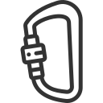
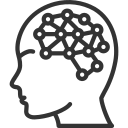

What do neuroscience, rock climbing, teaching, and psychology have to do with UX design?
Neuroscience
The scientific approach I applied to my work in neuroscience resembles the UX design process. My neuroscience work often required me to quickly become an expert on a topic about which I had little knowledge. By asking thoughtful, well-focused questions, I was able to develop assays and paradigms that provided the data required to characterize behavioral models and construct projects that provided the framework for conducting appropriately controlled experiments. As is the case with UX design, scientific inquiry involves multiple experiments, persistent questioning and multiple redesigns.

Rock Climbing
Rock climbing has taught me strong problem solving skills. Most of the time there is no obvious path to your goal and you are often forced to take steps that seem sideways or even backwards. A step might not lead forward but it often opens up a world of possibilities and different solutions to getting to the top of the rock. UX design and rock climbing both demand confronting a problem head on and trying different solutions until you find one that works. The process might not always be tidy but the result is elegant and rewarding.
Building
I have always been a builder. From building forts, a 3D model of Hogwarts and cardboard robots as a kid to designing and constructing large chicken coops, hydroponic systems and a car build (with bed/sofa, storage and dining table), I have always enjoyed the challenge of turning an idea into a practical, concrete result. I am working now on designing van conversions. The problem of fitting everything necessary for comfortable living into a small, moving space is an interative process that has expanded my ability to cultivate, refine and expand my design process into physical as well as digital spaces.
Teaching
In addition to teaching and mentoring others in the therapeutic horseback riding and rock climbing worlds, I taught an advanced research methods class in which I led my students through the process of designing a study, collecting data, and presenting the results and conclusions. Working with my students gave me unique insights into how they solved problems. These experiences illustrated the importance of empathy, developing shared understanding with others, and crafting a solutions that work on more than one level.

Psychology
My introduction to psychology began when I went to a Spanish immersion elementary school. At a young age, I understood that people see, interpret and communicate in different and unique ways. My curiosity surrounding differences in cognition led me to pursue a degree in psychology, where I studied why people behave in certain ways and how they arrive at certain conclusions. Understanding human perception and behavior is central to UX design and I take every opportunity to ask people about their motivations. I believe that many products fail because the design moves forward without a fundamental understanding of the intended user.
UX Design
UX design is cool. It attracts people, like me, from diverse academic and working environments. Scientists identify problems, research current approaches, and develop and test solutions that solve the problem. Rock climbers welcome challenges with a curiosity that examines the interplay between nature and technology. Builders understand that great products are born from good design decisions, planning and testing. Teachers and psychologists empathize, ask questions and focus on understanding others. The best UX designers do it all.

{kind=link}